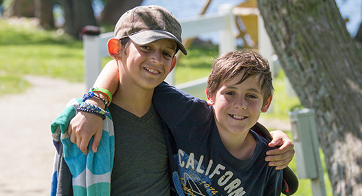

Tip of the Hats Staff & Info
In 2013, Sean "seanbud" Stradley started what would become Tip of the Hats on his Twitch stream, when Sean started a raffle into which anyone who provided a donation receipt to a charity would be entered. After the initial success of this mini-event, it was clear that something more could be made from it. The first annual Tip of the Hats was held a few months (and a lot of hard work later), in March of 2013.
CONTACT US
General Email: staff@tipofthehats.org
Prize/Rewards Support: prizes@tipofthehats.org
STAFF
Thank you for donating to One Step programs!
Please choose one of the following options:
Monetary contribution
All cash donations go directly to Children's Oncology Services, Inc.
TF2 item contribution
You can give items from a pre-selected list of TF2 items through scrap.tf, the value of which will be added to our donation total.
(see the list of approved items here)
Say, what *is* Tip of the Hats?

Tip of the Hats is a charity event hosted and supported by members of the TF2 community. Since 2013, it has raised over $450,000 for Children's Oncology Services, Inc., which offers camps and other educational and excursion programs throughout the year that allow children with cancer to just be kids. With your help, COSI can offer attendance to kids at little to no cost to their families.
Stream Highlights
Events and Happenings
[[event.label]]
[[event.info]]
Scheduled In-Studio Appearances
TUNE IN AND SUPPORT TOTH
Stream starts September 16th @ 11 AM CSTTerms & Conditions
All information presented on this site is tentative and subject to change!Lexicon
Virtual Items
Includes items from any of the following games: Team Fortress 2 (TF2), Counter Strike: Global Offensive (CS:GO).
Donation Bots
Automated Steam accounts that collect and organize donated virtual items.
Tracker / Donation Tracker
Used to donate money along with view prizes, donors, and donations.
http://tracker.tipofthehats.org/
Itemlog
Lists all virtual items donated to Tip of the Hats through our Donation Bots.
http://tipofthehats.org/itemlog
Privacy
Tip of the Hats only collects personal information you willingly provide through the donation tracker. This information is not sold or otherwise given to any outside parties. Any personally identifiable information provided to us is used solely for Tip of the Hats purposes. If you would like your information hidden or removed, please email staff@tipofthehats.org.
Transparency
All financial donations go directly to Children's Oncology Services, Inc. The associated email of the charity that receives the donations is lkunkel@onestepcamp.org.
Donations
Virtual Item Donations
Virtual Item Donations do not count towards raffle entries or the Team Fortress 2 "Tipped Lid" or "Jaunty Pin" items. There will be no refunds for Virtual Item Donations.
Monetary Donations
- are tax-deductible.
- cannot be refunded.
- do not count towards the Team Fortress 2 in-game "Tipped Lid" item.
Donations that go towards raffles/prizes are only valid through our donation tracker. PayPal is currently the only means of donating. If you would like your name removed from our donation tracker, please email staff@tipofthehats.org with your relevant donation information.
Prizes
Preface
Prizes (both virtual items and real-life merchandise) will be delivered within the weeks following the event. Given the scale of the event, this process will take time. You will be notified via email if you've won an item within the first week following Tip of the Hats.
Unclaimed Prizes
An email is dispatched to anyone who wins a prize within the week following the event. If you do not respond to this email within a week of the email's date, a new winner be rolled.
The Jaunty Pin
The Jaunty Pin is awarded to anyone who:
- donates $20 USD (cumulatively) through our event
- provides a valid SteamID64
Pins will be distributed to applicable donors following the event. If you feel you should have received a pin, please email prizes@tipofthehats.org with the email you donated under along with your SteamID64. To find your SteamID64, please use https://steamid.io/lookup
The Tipped Lid
The Tipped Lid can be purchased in the Team Fortress 2 shop for $4.99 USD. All revenue (excluding the cut Valve takes) goes directly to Children's Oncology Services, Inc. The Tipped Lid is not received by donating items or money to Tip of the Hats.
#TotH2016 total raised:
[[stats.total]]


With generous support provided by our event sponsors:


[[handle]]

{{name}}